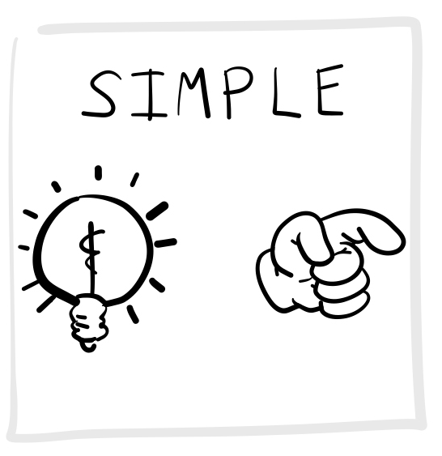
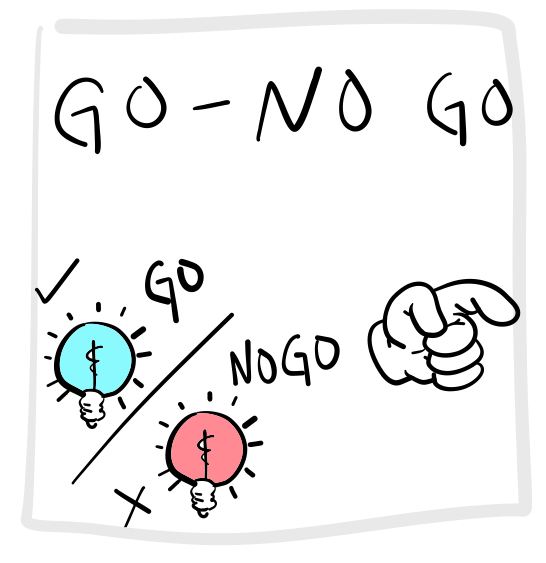
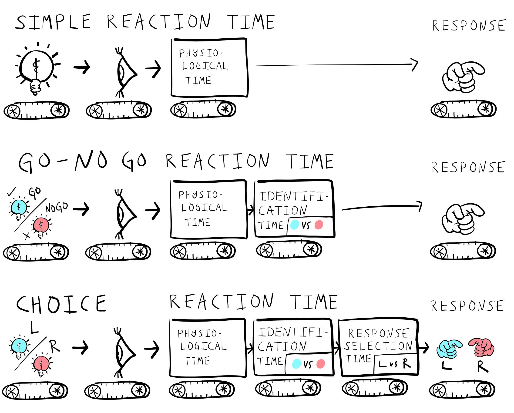
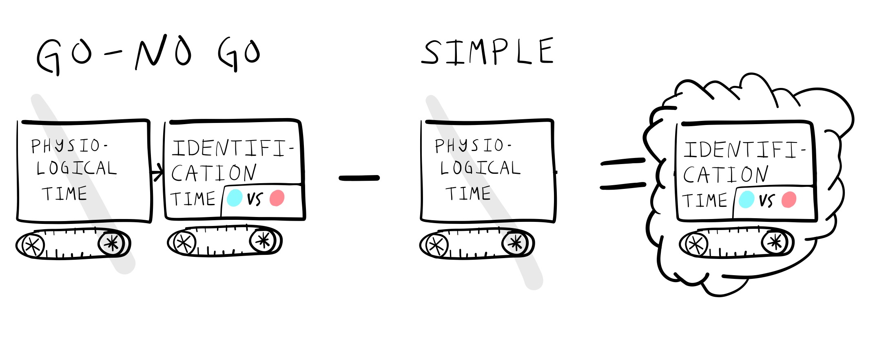
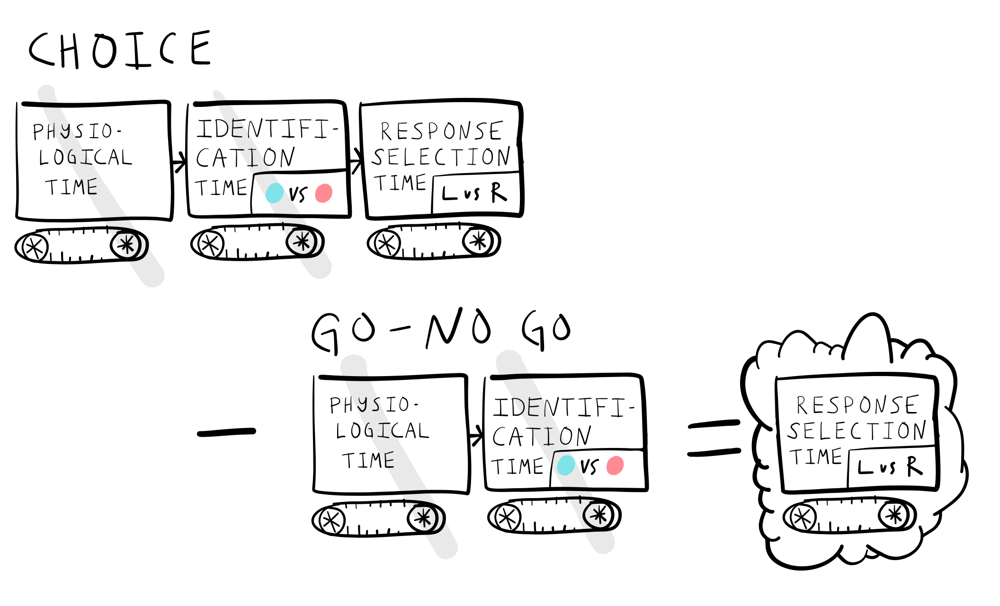
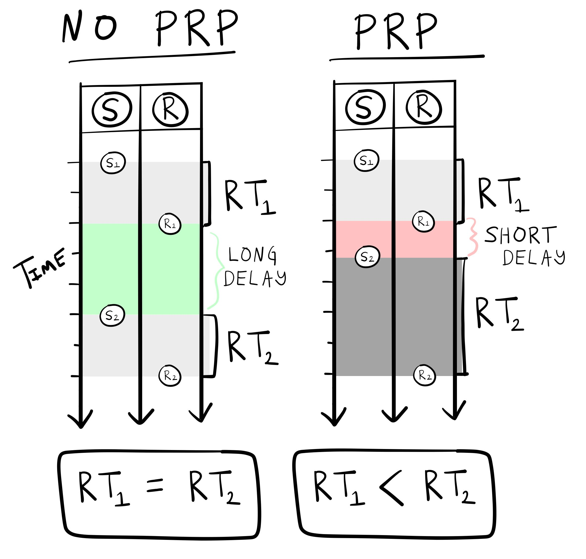
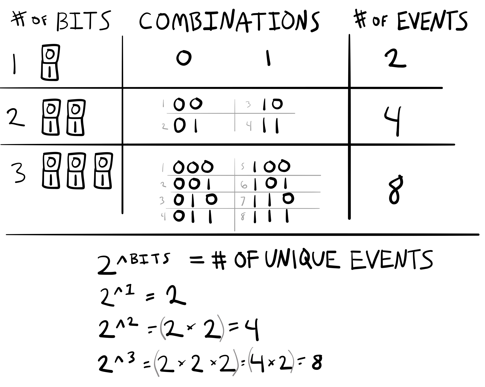
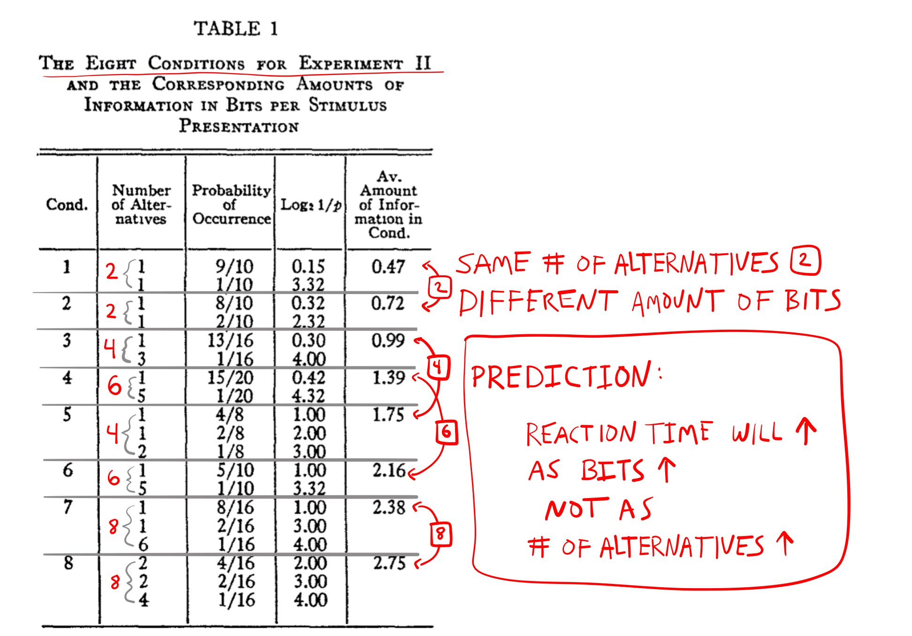
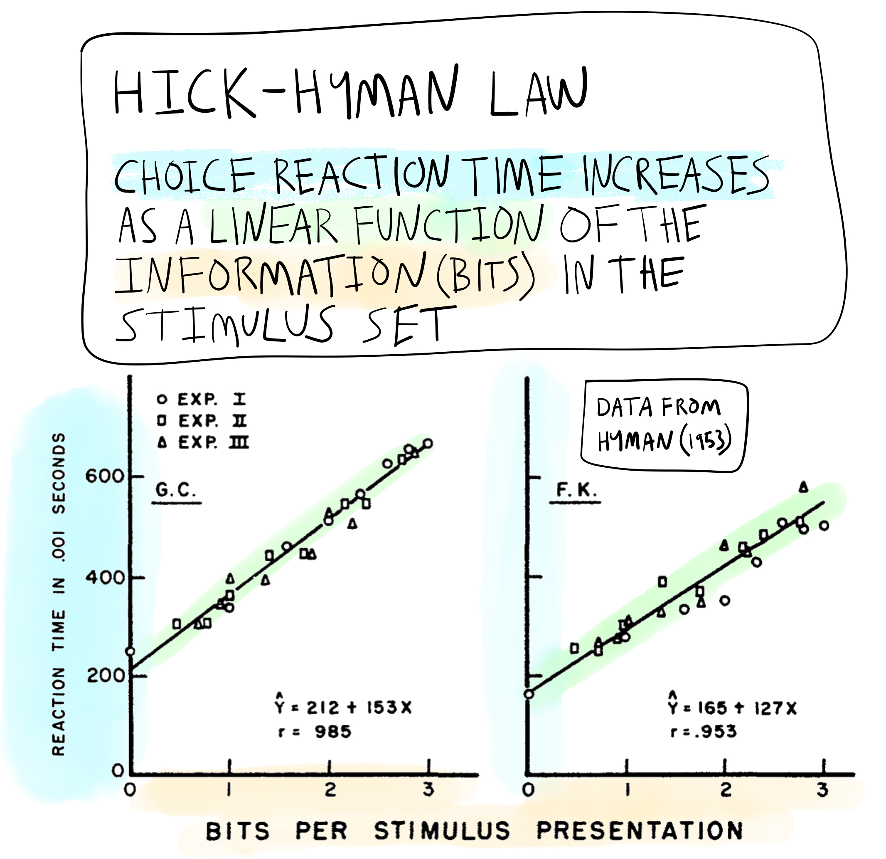

7 Information Processing
Abstract
This chapter covers the concepts of processing stages, information, and capacity limitations, which became popular cognitive research topics around the 1950s and 60s.
This chapter overviews information processing as a concept in cognition. As mentioned in chapter 1, Ulrich Neisser defined cognition as “all processes by which the sensory input is transformed, reduced, elaborated, stored, recovered, and used” (Neisser, 1967). Neisser’s definition embraces the information processing tradition in cognition. Sensory input contains “information” about the world, and cognition is characterized as the “processing” of that information. We examine the notions of processing stages, information, and capacity limitations, which became popular research topics around the 1950s and 60s.
Some alliterative themes about cognitive research are also introduced. For example, we begin the chapter with the four Rs, referring to the industrial, technological, digital, and “cognitive” revolutions. The first three revolutions introduced new machines that changed the course of human history. Some of these machines also influenced explanations of cognition. In particular, each era inspired mechanistic explanations of cognition that resembled machines of the day. In particular, this chapter discusses the “assembly-line”, “telephone”, and “computer” metaphors of cognition. The first two technologies shaped the concept of information processing so they are given the most attention. The computer metaphor is expanded upon in following chapters.
7.1 Four Revolutions: Industrial, Technological, Digital, and “Cognitive”
“Revolution” is used to describe periods in history where some innovation led to dramatic changes in society. For example, the industrial revolution in Western Europe and America involved creating large-scale machines, factories and assembly-lines to mechanize the means of production; and, is credited with launching the world into an unprecedented period of sustained growth (e.g., population growth, socio-economic growth). The second industrial revolution (AKA technological revolution), brought the introduction of electricity, telephones for communication, planes, trains, and automobiles for transportation, and new systems for infrastructure like sewage and water supply networks. Eras associated with the introduction of technology are also described in terms of ages, like the machine age, atomic age, jet age, space age. A more recent revolution was the digital revolution involving introduction of computer technology, which led into the information age. According to wikipedia, the next age could be the imagination age involving immersive virtual reality experiences and an economy primarily driven by “imagination work” 1.
Psychologists have also used “revolutionary” terms to describe historical periods of research in psychology. For example, the “cognitive revolution” generally refers to the period of experimental psychology following “radical behaviorism”. The figurative imagery implies that “cognitive psychologists” rebelled and overthrew the “behaviorist orthodoxy”. However, the transition between the two schools of thought was very gradual, and several aspects of behaviorism were retained as a part of modern cognition (Greenwood, 1999; for additional descriptions of the “cognitive revolution” see, Miller, 2003; Sperry, 1993). In this sense, “revolution” is not a great metaphor for the emergence of cognitive psychology . For example, cognitive psychologist George Mandler notes, “The term ‘revolution’ is probably inappropriate–there were no cataclysmic events, the change occurred slowly in different sub-fields over some 10 to 15 years, there was no identifiable flash-point or leader, and there were no Jacobins” (Mandler, 2002).
Metaphors can shape how people think of one thing in terms of another. The “cognitive revolution” could lead you to imagine a fight against the ruling behaviorists. In this case, the revolution metaphor is not very fitting or insightful. The metaphor does not illuminate important historical aspects of the behaviorism-cognitive transition. Using the metaphor could exaggerate the importance of some historical elements over others by highlighting attention toward elements that fit the metaphor, and misdirecting examination of elements that do not fit the metaphor. However, in other cases a metaphorical relationship can fit very well, be useful for explanation, and even generate insights.
Metaphors are commonly used to describe how cognition works. We will use technological revolutions as metaphors to describe concepts of “information processing” in cognition. The introduction of “information processing” concepts occurred during the transition from behaviorism to cognitivism, and involved mechanistic metaphors from the industrial revolution (the factory assembly line), and the technological revolution (the telephone).
7.1.1 Assembly-line metaphor of cognition
A major innovation of the Industrial Revolution was the introduction of machines and factories to automate production. These are physical devices that process and transform raw materials into other refined states, which are further transformed and/or assembled into goods or final products. For example, a factory assembly line for making crayons involves successive processing stages, such as heating wax in a vat, coloring and stirring the liquid, filtering, pouring, and drying, and forming the wax into malleable rolls. Then, the rolls of colored wax are extruded through perforated metal plates (with holes the size of crayons), dried, and placed in machines to wrap and package them.
The assembly line metaphor is also used in cognition and refers to the idea that there are separate stages of processing that transform the “raw materials” of sensation into the “final products” of cognition and action. We examine this metaphor in the section on Donders and his use of mental chronometry to measure assumed stages of processing.
7.1.2 Telephone metaphor of cognition
A major innovation of the technological revolution was the introduction of communication technology like the telegraph and telephone. This technology allowed people to communicate in real-time over long distances, from one device connected by wire to another device. There was a great demand for telephone technology, and the demand was met by creating a massive network of wires to connect phones to each other. Before automation, the telephone network was managed by human operators who worked at central nodes in the network. A caller who picked up a phone to place a call would be immediately connected to a human telephone operator and would ask to be connected to another phone. The operator received the instructions and made the physical connection in the network to connect the incoming call to the destination phone. Around the time of World War II, several psychologists began using elements of the telephone system as a metaphor for cognitive processing. After Donders’ processing stages, we examine the concept of “information” processing which was borrowed largely from telecommunication theory and technology.
7.1.3 Computer metaphor of cognition
A major innovation of the digital revolution was the introduction of computing technology. The rise of computer sciences also occurred in tandem with the growth of modern cognitive psychology. For example, the “cognitive sciences” are considered an interdisciplinary discipline that includes cognitive psychology, computer science, philosophy, linguistics, neuroscience, and anthropology. Like other transformational technologies, computers have been used as prominent metaphors for cognition. Sometimes cognitive theories are very literal with the metaphor, and cognition is broken down into parts resembling actual physical components of a digital computer. In other cases, cognition is described in terms of more abstract computational processes and algorithms rather than concrete components. Although computers are highly relevant to the “information processing” theme of this chapter, further elaboration on the computational metaphor of cognition will be reserved for upcoming chapters.
7.2 The mechanization of cognition
The first metaphorical theme is between cognition and machines from the industrial revolution. From the association chapter, Descartes likened human and animal physiology to a complicated plumbing machine, like the one he saw in the royal gardens. However, Descartes was a dualist who argued that the biological machine of the human body was merely a receptacle for psychic forces. Nevertheless, he inspired physiological psychology and modern neuroscience, which have the aims of explaining cognitive processes in terms of their physical and bio-chemical substrates.
Machines offer a reductive perspective on explanation. The goal of a mechanistic explanation is to explain how the parts of a process produce some complex phenomenon, just like how the connected parts of a machine determine how the machine works.
Machines set a standard for explanation. For example, if the inner workings of the machine of cognition can be “explained” to this standard, then along with other technology, cognition could be manufactured and innovated upon. By analogy, this could include ways to repair, restore, and preserve cognition, as well as create new ways for cognition to work and function. As with the prospects of behavioral engineering, cognitive technologies also raise a host of ethical questions.
Psychology does not always have the goal of achieving a machine-based explanation. For example, some of the behaviorists in the previous chapter deliberately side-stepped mechanistic explanations as a goal. For example, Skinner acknowledged that behavior was ultimately rooted in physical mechanisms, but he argued that behavior itself could also be studied at a macroscopic level, without referring to it’s microscopic mechanisms. He sometimes used terms that loosely referred to mechanisms. For example, a “reflexes” had “strength”, and were emitted after some “impulse” reached a “threshold”. All of these terms could refer to various physical mechanisms; however, Skinner was careful to say that none of them were intended to refer to any real mechanism. They were simply abstract and arbitrary terms in his system that he could have chosen different names for. As a result, many components of Skinner’s theory were not intended to be explained at a lower-level.
Behaviorists had an awkward relationship with mechanistic explanations. They were critical of domains that lacked mechanisms, such as mentalistic and introspectionist psychology; but, also carefully avoided having to describe mechanisms for their domain of psychology. Instead, they were content with terms that had metaphorical connotations of mechanisms, as long as the terms were operationally defined and useful for a descriptive system of behavior.
Stepping past the behaviorist era in to the cognitive one involves a shift in explanatory style from purely descriptive systems to a greater emphasis on mechanistic accounts of cognitive processes. This shift sometimes involves actual physical mechanisms in the brain, body, and environments; but, the shift also involves metaphorical mechanisms.
Metaphorical mechanisms may sound like an oxymoron, but they are very common in science. The general strategy is first to find a simple model system that is “like” a more complicated system under investigation; and then use the simple model as a “metaphor” to describe or generate insights about the more complicated system. The next section discusses mental processing stages and the assembly-line metaphor from the industrial revolution.
7.3 Donders’ Processing Stages
Up to this chapter, we have traced a line through psychology from Galton in 1865 to the period of behaviorism. There are several other starting points we could have chosen. For example, in the same year, 1865, Dutch physiologist F. C. Donders presented behavioral experiments on human reaction times to support the beginnings of a mechanistic theory of cognitive operations (Koster, 1969).
Donders’ work used an assembly line metaphor for cognition. In an assembly line, raw material is sent from one stage of processing to another, and a product is formed at the end of the whole process. In cognition, sensory input is the raw material that is transformed in successive stages of processing.
In an assembly line, each stage of processing takes some amount of time to perform a particular job. Similarly, in cognition, Donders assumed that there were individual stages of processing (for different cognitive tasks) that took specific amounts of time.
Donders’ major contribution was to develop methods for identifying stages of cognitive processing and estimating how long each of them took to complete. His was work was translated into English with the title, “On the speed of mental processes” (Donders, 1868–1969).
7.3.1 Donders mental chronometry and processing stages
Donders was impressed with research on the speed of nerve conduction. Earlier physiologists, such as Johannes Muller, suggested the velocity of nerve conduction may be infinitely fast, or potentially unknowable. But, in 1849, Hermann von Helmholtz succeeded in measuring nerve transmission speeds in a frog, which fell within the range of 24-36 meters per second.
The empirical observation that nerve conduction was not infinitely fast was very important for Donders. As a physiologist, he assumed that the thinking processes of the mind were controlled by organs in the brain. If the exchange of signals in the nervous system occurred infinitely fast, he assumed that processes of thought might also occur infinitely fast. However, the discovery that nerves had physical properties limiting how fast they conducted signals suggested to Donders that thoughts might have some measurable speed, so he set out to record the speed of thought.
7.3.2 Physiological reaction time
Donders pointed to the concept of physiological reaction time, which came first from astronomy (Canales, 2001). Astronomers made observations about the locations of heavenly bodies in the sky and entered positional coordinates and times of observations about those bodies into their record books. Different observatories around the world would share records. Theories of planetary motion could be tested by comparing the predictions about where planets should be at different times to the recorded data about where planets were observed to be at different times. There were discrepancies between theory and data. Astronomer Adolphe Hirsch wondered how much of the discrepancies were due to human error. Some of the human observers might have slightly faster perceptions than other human observers, and this could introduce error into the entries they made into the astronomical records. Hirsch set out to measure each observer’s “physiological” reaction time.
Imagine you were an astronomer about to look at a star through a telescope. As soon as the light from the star hits your eyeball, how long will it take for you to react to the light?
Donders called this duration “physiological time” in reference to the time it would take for the light stimulus to be transduced through the eye into nervous activity that would eventually lead to a muscle response. Hirsch had already developed methods to precisely measure an individual’s “physiological reaction time”, and he used those measures to account for human error in the astronomical records. Donders had a different use for the method. He wrote:
“The idea occurred to me to interpose into the process of the physiological time some new components of mental action. If I investigated how much this would lengthen the physiological time, this would, I judged reveal the time required for the interposed term.”
7.3.3 Donders mental reaction times
Donders conducted human reaction time experiments with tactile, visual and auditory stimuli using a similar method. A subject was presented with a stimulus and they responded to the stimulus as quickly and accurately as possible. Donders measured reaction time, which was defined as the amount of time between the onset of the stimulus and a subsequent response.
One question was whether different sense organs had different physiological reaction times. Additionally, Donders was interested in the amount of “mental” time it might take to perform increasingly complex tasks before making a response to a stimulus. Donders measured reaction times across three similar tasks that varied in complexity.

Figure 1 the simple reaction time task. This task measures the duration a person takes to recognize that a stimulus, such as a light, has been presented. Participants are instructed to wait for the stimulus and respond as swiftly as possible, immediately upon detection. Donders considered performance in this task to measure “physiological reaction time”.

Donders had subjects perform a slightly more complicated task shown in Figure 2, now referred to as the GO-NO GO task. In this task, participants are shown a stimulus but are told to respond only when they are presented with the targeted ‘go’ stimulus. For instance, the stimulus could be either blue or red; participants would be required to respond only when the stimulus is blue, a response known as a ‘Go’ response. If the stimulus is red, participants should not respond, classified as a ‘No Go’ trial.

Last, Figure 3 depicts a more complicated alternative forced-choice task. Here, participants are shown one of many stimuli and are required to respond to each with a specific response. For example, a subject could be asked to respond to a blue stimulus by pressing a left button, and to respond to a red stimulus by pressing a right button. This would be called a 2-AFC (two-alternative forced choice) task.
7.3.4 Donders subtractive stage logic
Donders used the subtraction of reaction times between tasks to estimate the speed of specific mental operations. He assumed that mental operations occurred in successive stages, just like an assembly line (shown in Figure 4), and that each stage took an average amount time.
According to Donders, the amount of time taken to respond to a stimulus should depend on how many processing stages are required for the task at hand. Simpler tasks have fewer processing stages and can be performed more quickly than more complicated tasks that require additional processing stages. These ideas are illustrated in Figure 5.

The fastest reaction time should be the physiological time found in the simple reaction time task. Reaction times should increase in length when additional mental processing is required before a response. For example, the GO-NO GO task should produce a longer reaction time than the simple reaction time task. This is because the task requires an additional mental operation of stimulus identification. In the GO-NO GO task, the stimulus must be identified as the target stimulus before a response is made. Figure 6 shows how Donders used subtractive logic to infer the time taken to complete mental operations like stimulus identification.

For example, if it took 170 milliseconds to make a response in the GO-NO GO task, and 150 milliseconds to make a response in the simple reaction time task, then Donders took the difference of 20 milliseconds (by subtraction 170-150 = 20) to index stimulus identification time.
This subtraction logic can be applied to infer the times of subsequent stages of processing. For example, reaction times in the choice task (2AFC) are longer than in a GO-NO GO task. Following Donders logic, a 2AFC task involves yet another mental operation: response selection. For example, in a choice task a stimulus must be identified, and then the correct response (e.g., right or left) must be selected before the final response is made.

Figure 7 shows that response selection time could be measured by subtracting the reaction time in the 2AFC task, from the reaction time in the GO-NO GO task.
7.4 Beyond Donders
The next sections review developments of Donders’ subtraction logic, research on human reaction times, and the concept of processing stages since his proposals in 1865.
7.4.1 Subtractive logic
Donders’ subtractive logic is a nifty idea, but it doesn’t necessarily produce correct inferences about cognitive operations. One issue is the distinction between serial and parallel processing. If the intervening mental operations between a stimulus and response truly function like a simple serial assembly-line, then the subtractive logic can work very well. In this case, the mental operations take place one after the other in a series. By subtracting reaction times from tasks involving one less mental operation, the total reaction time for a task involving two or more mental operations (which occur in serial stages) can be deduced.
However, a problem arises for subtractive logic when operations can be done simultaneously or in parallel. In this scenario, different processing stages might occur concurrently, and measuring additional time spent on a mental task may not necessarily reflect distinct processing stages. Another problem occurs if the stages are unpredictable, and therefore it does not make sense to subtract times that are not constants.
To address some of the inferential problems with subtractive logic for making inferences about putative processing stages, Saul Sternberg introduced another method called additive-factors logic (Sternberg, 1969). Subtractive logic also became commonly used in neuroimaging research to find areas of brain activity uniquely correlated with specific task demands (Alexander et al., 2015).
7.4.2 Reaction time research
The measurement of reaction times to make inferences about cognitive processes became widespread and remains a very common measurement tool in cognition. For example, we already discussed Cattell’s associative reaction time research from 1886, which was clearly inspired by Donders. In 1890, Jastrow reviewed the promising uses of reaction time methods in psychology in a book called, Time Relations of Mental Phenomena (Jastrow, 1890). Reaction times would be used throughout every decade to study cognitive processes in humans, even throughout the behaviorist period. We will continue to discuss reaction time research throughout this chapter and others.
7.4.3 Processing Stages
Donders’ concept of mental processing stages disappeared for a while during the behaviorist era. Although some behaviorists (like Tolman and Hull) were willing to speculate about intervening processes between a stimulus and response, other forms of behaviorism were not interested in whatever mental operations might be taking place. As a result, the possibility that there was a mental processing stage for stimulus identification, response selection, or other mental operations was not of scientific interest.
The concept of processing stages came back in different ways, and we will see more examples in the chapters on memory, attention, and computational modeling. As a historical side note, Donders’ ideas regained popularity in the field of cognition approximately a century after his original publication. His centenary was commemorated at the second Attention and Performance conference in 1968, which took place in the Netherlands. This ongoing conference series features invited speakers and continues to publish books that compile the papers presented at each conference. During the early conference years, numerous articles established the importance of processing stages in cognition. One notable example to briefly mention is the psychological refractory period.
7.4.3.1 PRP: Psychological Refractory Period
British psychologist A. T. Welford drew attention to the “Psychological Refractory Period” in a 1952 paper (Welford, 1952; see also Welford, 1959). In the preceding war years, basic research on human reaction times was conducted for the war effort. For example, the ability to make a quick reaction could be important for a pilot. As a result, empirical studies were conducted to identify useful information about human reaction times. Useful information could include how to make reactions more efficient, or to discover limitations in reaction times that could be addressed. For example, if people are pressing buttons or flicking switches in a cockpit, how should the cockpit be designed to improve the speed and accuracy of the responses?
Welford observed the psychological refractory period from existing reaction time research and discussed possible explanations for the finding in terms of processing stages. The basic PRP effect was that responding to one stimulus can sometimes delay a response to a second stimulus, especially if they are presented quickly, one after the other.

The conditions to observe the PRP effect are depicted in Figure 8. In the task, participants are presented with stimuli (S) one after the other, and asked to respond (R) as fast as possible to each of them, for example, by pressing a button.
The long-delay condition highlights an important difference between two successive stimuli. In this case, the second stimulus (\(S_2\)) appears after a long temporal delay following the response (\(R_1\)) to the first stimulus \(S_1\). When this delay is long enough, the average reaction time to the first and second stimulus are generally the same (\(RT_1 = RT_2\)). However, when the delay is shortened, the PRP effect is observed: the average reaction time to the second stimulus becomes longer than the average reaction time to the first stimulus (\(RT_1 < RT_2\)). This lengthening of the second response time is an example of the so-called “psychological refractory period”.
The PRP effect is a reliable finding in reaction time research, and since Welford, hundreds of papers have been published on the phenomenon. Note that as we move forward, we will discuss many findings like the PRP effect that have inspired a large number of research papers. The term “paradigm” is commonly used to refer to collections of research activity that are relatively focused on specific phenomena or tasks. For example, we could refer to the maze-running research discussed last chapter as a paradigm using the task of maze-running. The PRP paradigm is full of papers testing explanations of the PRP phenomenon. My purpose in bringing up the PRP literature is not for us to become experts in this one phenomenon; instead, the PRP effect provides a clear example of the metaphorical use of processing stages to provide a quasi-mechanical explanation of the phenomena.
So, why does the PRP effect occur? Why is the second response time lengthened if the second stimulus is presented shortly after a previous response? In 1959, Welford described five different theoretical accounts. One possibility was a physical explanation in terms of limitations of signaling among nerve fibers. Another theory had to do with preparedness or expectancy, perhaps the shorter duration caused people to be more surprised, and it was the surprise that lengthened the second response. The fifth hypothesis involved a central mechanism with a single channel of limited capacity, and was summarized as follows (Welford, 1959):
“In its bare essentials this theory assumes, firstly, a number of sensory input mechanisms each capable of receiving data and storing it for a limited period so that, for example, a short series of signals can be received as a unit. Secondly, it assumes a number of effector mechanisms containing both central and peripheral elements and capable of carrying out a series of actions such as the pressing and release of a key or a series of taps (Vince, 1949) as a single unit. Thirdly, between these two it postulates a single-channel decision mechanism. This is regarded as being of limited capacity in the sense that it takes a finite time to process information and can thus only deal with a limited amount of information in a given time.”
The mechanism being proposed is like the processing stages of a serial assembly line. A stimulus is first processed in the perceptual stage and then moved to the next central processing stage. The central processing stage produces the decision to respond to the stimulus. This decision is sent to a response production stage, and the response is made. Furthermore, the central processing stage is claimed to be “capacity limited”. For example, what if it could only deal with one decision at a time? This would create a bottleneck in performance. If a second stimulus entered the central stage, it would have to wait in line until the decision to respond to the first stimulus was sent to the next stage.
Welford and others (Broadbent, 1957, 1958; Craik, 1948; Davis, 1957; Fraisse, 1957; Hick, 1948) were part of a new wave of researchers applying concepts from telecommunications science and technology to human cognition. For example, the idea of a single-channel decision mechanism processing information in a capacity-limited manner was motivated by telephone technology. The second half of this chapter expands on this metaphor, detailing how it influenced the concept of information processing in cognition.
7.5 Cybernetics and the Macy Conferences
We’ve been jumping around a little bit in historical time. Last chapter ended with Skinner circa 1938, and this chapter went back to Donders circa 1868, and then forward in time to the Attention and Performance conference of 1968. That leaves roughly a 30 year gap between 1938 and 1968 that we didn’t talk much about. This was a dense historical period that informed the cognitive sciences. There was a world war, the invention of nuclear weapons, the invention of digital computers, and the gradual transition in American psychology from behaviorism to cognitivism. This time period also contained the Macy Conferences and Cybernetics, which provide useful perspectives on the transition into the cognitive era.
The Macy conferences were held (160 over 19 years) in New York between 1941 and 1960. These conferences were sponsored by the Josiah Macy J. Foundation and involved attendees from a variety of academic backgrounds to encourage interdisciplinary interactions and exchange of ideas. For example, many attendees were academics from the disparate fields of psychology, philosophy, anthropology, physiology, linguistics, genetics, and math and computer science (and others). And, rather than discussing specialty topics of little relevance to other fields, they were interested in discussing potential overlaps and bigger issues requiring sharing and integration of methods between fields.
Many of these exchanges revolved around a movement called cybernetics. Cybernetics still exists as a field, but is also recognized as the beginning of what is now called the cognitive sciences. Cybernetics played a transitional role in American psychology by bridging elements of behaviorism with later cognitivism.
Norbert Weiner, acclaimed as the father of cybernetics, initiated this trans-disciplinary approach that focuses on the “control and communication in both the animal and the machine” (Wiener, 1948). This concept was further expanded by mathematician A. K. Kolmogorov, defined cybernetics as “concerned with the study of systems of any nature which are capable of receiving, storing and processing information so as to use it for control.” (see also many more definitions of cybernetics in Umpleby, 2008). In Kolmogorov’s sense, Skinner’s behaviorism was an example of cybernetics with some important missing elements– he was studying principles of behavioral control in an animal system, but he was not too concerned about internal processes that might be responsible for receiving, storing, and processing information. Cybernetics had a much broader vision of control, which was to understand the principles of any type system that appeared to regulate itself, including humans, animals, and even machines. The hope was that the principles would be somewhat generalizable across systems and allow insights from one area to foster innovations in another. For example, if principles of cognitive processing in humans could be better understood, then perhaps machines could be made to operate by those principles, which could lead to artificial forms of intelligence. Thus, sharing findings and methods between domains was encouraged because of the potential for new and unexpected insights.
In other words, cybernetics was okay with psychologists exploring mechanistic metaphors for cognitive processing. For example, from a cybernetics perspective, a psychologist might benefit from learning something about telecommunications technology because those methods could provide a model system for understanding something about how people communicate. Whatever insights were extracted could, in turn, be useful for understanding communication in other systems, like animals, machines, or other networks using a communication concept. Indeed, major advancements in telecommunication technology were being discussed at the Macy conferences, and the attending psychologists were very quick to apply those advancements to an emerging cognitive psychology. One of the major advancements was Claude Shannon’s “Information Theory,” which is described first, followed by two ways that it was applied as a metaphor for cognition.
7.6 Shannon’s Information Theory
There were numerous attendees at the cybernetics conferences whose contributions to the cybernetics movement were also foundational for the cognitive sciences. Most relevant to this chapter was the American mathematician Claude Shannon (1916 – 2001). His 1937, master’s degree (MIT) was titled “A Symbolic Analysis of Relay and Switching Circuits” (Shannon, 1938). This was a theoretical paper about the math and logic behind the telephone exchange networks of the day. The exchanges had been automated so that they no longer required a human operator to connect one phone to another, and Shannon’s analysis suggested more efficient designs for switches making the connections. The very same math would later be fundamental for the design of circuits in digital computers. In 1940 Shannon completed his Ph.D. titled, “An Algebra for Theoretical Genetics” (Shannon, 1940) based on his work at the Eugenic Record Office at Cold Springs Harbor Laboratory. During world war II, he worked at Bell lab’s on “A mathematical theory of cryptography”, which involved methods to send and receive messages on communication lines that might have many other listeners besides the intended recipient. Then, in 1948-49 he published what is now called “Information theory” in a book called “The Mathematical theory of communication” (Shannon & Weaver, 1949).
Information Theory was not developed as a theory for cognition or psychology. It offers a way to mathematically describe general elements of communication systems and has found useful applications in many domains, including psychology. We will focus on two ideas from information theory that became popular in early cognitive research. These are the concept of an information channel and the idea that information can be measured and quantified using Shannon’s formula for entropy (\(H\)).
7.6.1 Information channels
An information channel has three major parts– a sender, a channel, and a receiver–and two big questions: how much information was sent? And, how much was received?

The toy telephone system made out of tin cans and string in Figure 9 is a simple information channel. In this system, one person speaks into a tin can on one end. There is a hole in the bottom of the can, and a knot is securely blocking the hole so that the remaining length of string can be unrolled for a distance and connected to another tin can. The person on the other end is holding the second can up to their ears and listening to the message from the sender.
The speaker’s vocal cords push air through their mouth, creating airwaves in the range of audible frequencies. These waves project into the can and, through a process of physical resonance, transfer the wave pattern in the air to the can. As a result, the can begins to wave with similar frequencies. The can is connected to a string, which also starts waving in the same way, carrying the wave across to the other can. Now, the other can starts to wave too, shaping the air inside it and causing new airwaves to be emitted. These airwaves then travel through the air and into the ear canal of the person listening on the other end. The outer, middle, and inner ear then begin vibrating as well, transducing the mechanical waves into nerve impulses. Eventually, the receiver listens to the message and maybe says something back, repeating the process.
Acts of cognition are important bookends to this story. From the beginning, we can ask how it is that someone can speak a message at all (or pick up a can or make a toy telephone), and at the end, we can ask how someone hears and understands a message and decides to respond to it or not. However, for our immediate purposes, we will not focus on those psychological aspects but instead return to some of the questions about the information channel, which is the medium through which the message passes.
An information channel is a general concept with an important property called capacity. An information channel could be a tin-can telephone with a real string connecting two devices, or it could be a wireless cell phone connected through more advanced technology involving very high frequency waves. Both kinds of phones have a limited ability to send signals; this is called the channel capacity. For example, you can hook up one can to another and hear someone speak on the other end. In loose terms, we could say a string has the capacity to support one message. However, if you hook up more cans to the same string and allow many people to talk at once, the quality of the signal at the receiving end will become increasingly worse. In this sense, the string has a limited amount of capacity to transmit a signal.
Questions about information capacity were fundamental for improving telecommunications technology. For example, what was the information capacity of a physical telephone line? How many calls could it support? What happens when the capacity is exceeded? How could the systems be improved to increase the capacity and support more calls? Could the lines support other kinds of signals? If so, how much? What other kinds of signals?
7.6.2 Measuring Information: H
One of Shannon’s mathematical contributions was to propose a definition for quantifying the amount of information. His formula defines information in terms of entropy, or the amount of uncertainty in a system of messages, and is called Shannon’s \(H\):
\(H(X) = -1*\sum_\text{i=1}^n P(x_i) * log_2 P(x_i)\)
A formula for quantifying information meant that capacity limitations of information channels could be measured and assigned a value indicating how much information they could carry. Additionally, the content of signals could be analyzed and described in terms of how much information was contained in the signal. Finally, when signals are sent across an information channel and received at the other end, sometimes parts of the signal are lost during transmission. The amount of information lost could now be described and accounted for with Shannons’s \(H\).
Shannon’s formula defines information in terms of the predictability of a sequence of messages. For example, imagine a long book with 1,000 pages, but the only word printed in it is the letter “A” many times. Shannon’s formula would say this book transmits zero information because the message is 100% predictable. In Shannon’s theory, communication of information does not occur if the receiver already knows the content of the message.
By contrast, according to Shannon’s definition, the amount of information in a message increases as it becomes more unpredictable. For example, a short book could contain many sentences with words in new combinations that you had never encountered before. When you read the book, you find almost every new statement to be unexpected and surprising. According to Shannon, this kind of book contains much more information than the book of As, which has a long message that is entirely expected.
Shannon takes the definition of information to an oddly extreme place. By definition more random messages have more information, and the ultimate message carrying the most possible information is total randomness 2.
One way to conceptualize this is to think of total randomness as containing all possible messages in a system. For example, consider Borel’s (1913) infinite monkey theorem (Borel, 1913), which says that a room full of monkeys typing letters on a keyboard for infinity will eventually produce any text, even the works of Shakespeare. So, even though most of the books written by the typing monkeys will be totally incoherent, they are producing all of the possible ways to print letters in books. Therefore, they are writing all of the books that make sense, and all of the ones that don’t 3.
This last example is a warning to not equate Shannon’s definition of information with meaningfulness. For example, according to Shannnon, the above books that contain meaningful text to humans would actually convey less information than completely random books. More simply, Shannon’s \(H\) is a single number to describe the amount of randomness in a system. If the system was a coin that could transmit one of two messages–heads or tails–then, Shannon’s H is a measure of how fair or biased the coin is. A fair coin is completely random, and transmits the maximal amount of information. A biased coin comes up heads or tails more often. As a result it is more predictable, and transmits less information.
7.6.3 Computing H
Let’s use the coin flipping example to compute \(H\), or the amount of information according to Shannon’s formula. Here is the formula again:
\(H(X) = -1*\sum_\text{i=1}^n P(x_i) * log_2 P(x_i)\)
The capital \(X\) refers to the set of discrete events that can occur in a series of messages.
In a coin toss there are two events, heads or tails. The term \(P(x_i)\) refers to the probability that each event occurs, and \(log_2 P(x_i)\) refers to taking the logarithm base 2 of that same probability.
To state what the formula says in a sentence: multiply (\(*\)) the probability of an event (\(P(x_i)\)) by its base two logarithm and find the product, do the same for all events (from i= 1 to n, the number of events), add up all of the products (\(\sum_\text{i=1}^n\)), and then multiply the final sum by -1.
The table below shows the calculation of \(H\) for a fair coin. A fair coin has two possible events, heads or tails, and each event has the same .5 probability of occurring.
| Events | \(i\) | \(P(x_i)\) | \(log_2 P(x_i)\) | \(P(x_i)*log_2 P(x_i)\) |
|---|---|---|---|---|
| Heads | 1 | 0.5 | -1 | -0.5 |
| Tails | 2 | 0.5 | -1 | -0.5 |
| sum | \(\sum_\text{i=1}^n\) | -1 | ||
| H | \(-1*\sum_\text{i=1}^n\) | 1 |
To walk through the table, in the first row we have the calculations for heads. The probability of heads is .5.
\(P(x_i) = .5\)
The logarithm base 2 of .5 is -1.
\(log_2 P(x_i = .5) = -1\)
Multiplying the two together gives -.5.
\(P(x_i)*log_2 P(x_i) = .5 * -1 = -.5\)
In row two, we see the same calculations because the probability of tails is also .5. The last steps of the formula involve summing up the products in the last column.
\(\sum=-.5 + -.5 = -1\)
Finally to convert to a positive number, the sum is multiplied by a -1, (-1 * -1 = 1). So, for a fair coin, \(H = 1\).
7.6.4 Bits of information
Shannon’s formula uses a base two logarithm that outputs a number in the unit of bits. Bits are also the building blocks of modern digital computers. One bit represents a single binary operator that can be in one of two possible states. For example, a coin could represent a bit. If we stipulated that a coin could only land heads or tails, then it would function the same as a binary operator with two possible states. Another binary operator is a logic statement that can either be TRUE or FALSE. It is also possible to express numbers using binary symbols.
Bits also provide a measure the total number of discrete events in a system of messages. Let’s see how.
A single bit has two states, 0 or 1. So, a single bit can represent two unique states, like heads or tails.
How many states can two bits represent? This would involve counting all of the unique ways of combining the states from two bits. All of the four possibilities are: 00, 01, 10, and 11. Figure 10 shows the relationship between number of bits, and the number of unique events that can be represented by combining bits together.

The relationship between number of bits and number of unique events that they can code is defined by raising 2 to the number of \(Bits\):
\(2^\text{Bits} = \text{number of events}\)
The figure shows some examples of computing the number of unique combinations that can be coded with up to three bits.
7.6.5 H, Bits, predictability and Information
Let’s put these concepts together to discuss a set of messages in Shannon’s communication system. Remember, a sender sends a message to a receiver across an information channel. In this system, important questions are how much information is in the message? How much capacity to transmit information does the channel have? And, how much information is received or lost in transmission?
Shannon’s formula provides a way to calculate answers to these questions; however, in order to do the calculations the message needs to be converted into discrete events so that it can be measured in terms of bits.
Consider a simple communication system where a sender can only send one of four events: A, B, C, or D. How many bits are needed to represent these four events? From the figure above we can see that the answer is four bits.
If a sender is communicating only discrete events like As, Bs, Cs, and Ds, then Shannon’s formula provides a way to measure the amount of uncertainty in the message.
The most uncertainty occurs when the message is completely random. By definition, this means that the sender randomly chooses to send As, Bs, Cs, and Ds with equal probability. This is like a four-sided coin flip (if that was possible). Each of the probabilities is .25, or 1/4. In this situation, the receiver has no way of predicting which event will occur as they receive the message. The events are maximally uncertain.
Watch what happens when we compute \(H\) using Shannon’s formula. The answer is \(H = 2\), which is the same as the number of bits needed to represent each of the four events:
| Events | \(i\) | \(P(x_i)\) | \(log_2 P(x_i)\) | \(P(x_i)*log_2 P(x_i)\) |
|---|---|---|---|---|
| A | 1 | 0.25 | -2 | -0.5 |
| B | 2 | 0.25 | -2 | -0.5 |
| C | 3 | 0.25 | -2 | -0.5 |
| D | 4 | 0.25 | -2 | -0.5 |
| sum | \(\sum_\text{i=1}^n\) | -2 | ||
| H | \(-1*\sum_\text{i=1}^n\) | 2 |
We have just seen that when a communication involves a maximally unpredictable set of events, Shannon’s formula for \(H\) returns the number of bits needed to represent each of the unique events in the message. In other words, the number of bits represents an upper bound on the amount of information in a message. In this case, it represents maximal uncertainty when the events occur with equal probability.
What if the events do not occur with equal probability? This would mean that some of the events are more likely than others. In Shannon’s system, whenever some events are more likely than others something special happens at the receiving end of the message. The receiver is now able to predict some of the message. For example, if the message was 70% As, 10% Bs, 10% Cs, and 10% Ds, the receiver would be able to predict that each event has a high probability of being an A, and a low probability of being a B, C, or D. Let’s enter this situation into the formula for H and see what happens:
| Events | \(i\) | \(P(x_i)\) | \(log_2 P(x_i)\) | \(P(x_i)*log_2 P(x_i)\) |
|---|---|---|---|---|
| A | 1 | 0.7 | -0.514573172829758 | -0.360201220980831 |
| B | 2 | 0.1 | -3.32192809488736 | -0.332192809488736 |
| C | 3 | 0.1 | -3.32192809488736 | -0.332192809488736 |
| D | 4 | 0.1 | -3.32192809488736 | -0.332192809488736 |
| sum | \(\sum_\text{i=1}^n\) | -1.35677964944704 | ||
| H | \(-1*\sum_\text{i=1}^n\) | 1.35677964944704 |
In this case, \(H\) is computed as 1.35, which means that events in the message require less than 2 bits. There are still four events, but one of them is more predictable then the others. If we made one of the events even more predictable (e.g., like A = .97), then the amount of bits needed would decrease and get closer to zero.
| Events | \(i\) | \(P(x_i)\) | \(log_2 P(x_i)\) | \(P(x_i)*log_2 P(x_i)\) |
|---|---|---|---|---|
| A | 1 | 0.97 | -0.0439433475875971 | -0.0426250471599691 |
| B | 2 | 0.01 | -6.64385618977472 | -0.0664385618977472 |
| C | 3 | 0.01 | -6.64385618977472 | -0.0664385618977472 |
| D | 4 | 0.01 | -6.64385618977472 | -0.0664385618977472 |
| sum | \(\sum_\text{i=1}^n\) | -0.241940732853211 | ||
| H | \(-1*\sum_\text{i=1}^n\) | 0.241940732853211 |
If one of the event occurs 100% of the time, and the others occur 0% of the time, then \(H=0\). What happens in the formula is that \(log2(1) = 0\), and \(log2(0)= -infinity\). By convention, the negative infinities are turned into 0s, which result in a sum of 0s, such that \(H=0\).
| Events | \(i\) | \(P(x_i)\) | \(log_2 P(x_i)\) | \(P(x_i)*log_2 P(x_i)\) |
|---|---|---|---|---|
| A | 1 | 1 | 0 | 0 |
| B | 2 | 0 | -Inf | 0 |
| C | 3 | 0 | -Inf | 0 |
| D | 4 | 0 | -Inf | 0 |
| sum | \(\sum_\text{i=1}^n\) | 0 | ||
| H | \(-1*\sum_\text{i=1}^n\) | 0 |
7.6.6 Summary
In the next sections we will see examples of how Shannon’s information theory was applied in psychology. To summarize the preceding sections, here is what we have learned.
Shannon characterized communication as involving an information channel that transmits discrete messages from a sender to a receiver. He measured the amount of information transmitted in terms of bits. Messages with more unpredictable events transmit more information, measured in bits, than messages with more predictable events. A message that contains 100% predictable events transmits no information because the receiver does not need to receive the message to know what the contents are. A message that is 100% random transmits the maximal amount of information, because the receiver is unable to predict the events, and “learns” something new about the message every time. Messages with intermediate levels of predictability transmit an intermediate amount of information between 0 (maximum predictable) and the number of bits (maximum uncertainty) representing all possible events in the message.
7.7 Hick-Hyman “Law”
Let’s connect back to two previous issues. First, we have been discussing mechanistic metaphors of cognition. Shannon’s ideas about communication along an information channel were applied as metaphors that had potential to provide insight cognitive processes. Second, in our previous discussions of research we saw examples of reaction time methods. This section discusses the Hick-Hyman “Law”, which was a very promising application of information theory to findings in the study of choice reaction-times. The word “Law” is quoted because the findings are referred to this way in the literature, but there are edge-cases where the law does not always hold up.
7.7.1 Choice Reaction time
A basic choice reaction time (CRT) task was already described in the Donders section. Here it is again. In a choice reaction study a participant is presented with one stimulus per trial, and instructed to identify the stimulus as quickly and accurately as possible by making a unique response to the stimulus. For example, the stimulus could be an X or an O, and the response could be to say “X” out loud (when an X is presented), or to say “O” out loud (when an O is presented). The response could be made in different ways too. For example, the buttons on a computer keyboard are often used in reaction time studies, so the “X” on a keyboard could be used to respond to an X, and the “O” on a keyboard could be used to respond to an O.
There are many variations on the general choice reaction time procedure. For example, if you were the experimenter, you could manipulate the kind of stimuli presented, the number of trials, the number of times a stimulus is presented, the kind of response made to each stimulus. You could make the stimuli more difficult to identify by degrading them, you could make the responses easier or harder to make by making the required movements more or less natural. You could give people more or less practice, and measure how consistent they are over time, or whether they get faster or not. All of these kinds of manipulations and more have been conducted and reported in the choice reaction time literature. As you might imagine, this research enterprise produces many patterns of data, because it turns out that several factors make reaction times faster or slower.
When researchers are presented with an overwhelming amount of data, they often look for regular patterns in the data. This helps to summarize the data into more manageable and understandable units. This practice of looking for prominent and predictable patterns in data is similar to the process of identifying “laws” about a natural phenomena. During the behaviorism period there was interest in discovering laws of behavior, and this same interest applied to research on choice reaction time. For example, a general question was, “what are the laws governing choice-reaction time?”. What makes choice-RT faster or slower? Before Hick and Hyman came along, prior work had produced one very reliable finding.
7.7.2 The number of alternatives increases choice-RT
The law-like finding was that choice reaction time increased as the number of alternatives increased. For example, in a choice-RT study it is possible to vary the number of unique stimulus-response pairs. A task could have two stimuli and two responses, or four stimuli and four responses, or any number of stimuli and corresponding responses. The set of possible stimulus-response pairs are called the alternatives 4.
When researchers manipulated the number of alternatives in the task, they found that average response time to respond to any stimulus goes up and up, as the number of alternatives increases.
7.7.3 Number of alternatives or “Information” in the message?
William E. Hick (1912 – 1974) was a British psychologist (and member of the British cybernetics “Ratio club,” Holland & Husbands, 2011), and Ray Hyman an American psychologist, who both had the insight to examine findings in the choice reaction-time literature from the perspective of Shannon’s information theory. They both developed experimental methods to test the idea that people might be sensitive to the amount of “information” in stimulus set, rather than simply the number of alternatives.
The metaphor was that the experimenter is sending information to the subject over the course of the choice reaction time experiment. One question was whether the subjects’ ability to process the message was influenced by the amount of information in the message. Prior research had already shown findings that were consistent with an information theory interpretation.
For example, choice reaction times were faster when there were two alternatives compared to four alternative. Typically, stimuli were presented randomly on each trial. So, from Shannon’s information theory, a task with two unpredictable alternatives carried 1 bit of information, but a task with four unpredictable alternatives carried 2 bits of information. The question for Hick and Hyman was whether increasing the number of alternatives (2 vs 4) was slowing people down for some reason, or whether it was really increases to the amount of information (1 bit vs 2 bits) that was slowing people down (perhaps because more information required more processing time). The problem was that the number of alternatives and amount of information in bits was completely confounded in prior experiments. The solution was to conduct new experiments that de-confounded the relationship between number of alternatives and amount of information.
7.7.4 Deconfounding alternatives from information
The solution was to create different versions of a choice-reaction time task that independently varied the number alternatives and the amount of information. In this kind of experiment it would be possible to determine whether reaction times were being influenced by the number of alternative, the amount of information, or both.
We have already seen some ways to manipulate the amount of information in a message. One is to change the number of unique alternatives sent in the message, and the other is to change the predictability of each of event in the message. For example, in the preceding section we saw that communication with four equi-probable events (A, B, C, D) required 2 bits of information. However, if one of the events (A) was more probable than the others, the number of bits information was reduced. As a result, it would be possible to have different versions of a choice reaction time task that held the number of alternatives constant (e.g., four), but changed the predictability of the alternatives, which would vary the amount of information in the task.
7.7.5 The experiments
Hick published his results in 1952 (Hick, 1952), and Hyman published his in 1953 (Hyman, 1953). We will take a quick look at Hyman’s experimental conditions and findings.
7.7.5.1 Experiment I (Hyman 1953)
The first experiment was a choice-reaction time task with 8 different conditions, corresponding to the number of alternatives, from 1 to 8. In each condition, all stimuli were presented randomly. Thus, the amount of bits in each condition was ranged from 0 to 3 (bits for 1 to 8 alternatives are: 0, 1, 1.58, 2, 2,32, 2,58, 2,81, and 3). As others had found, Hyman’s subjects showed a strong linear relationship between bits and reaction time. Reaction time increased linearly with amount of bits. Note, however, in Experiment I, the number of alternatives, was completely confounded with the amount of bits.
7.7.5.2 Experiment II (Hyman 1953)
The second experiment varied the amount information in bits and the number of alternatives separately across 8 conditions. Figure 11 shows the design.

The first two conditions both had 2 alternatives each, however, the choices were more predictable in the first than second condition. In condition 1, the first alternative occurred more often (9/10 times) than the second alternative (1/10 times). In condition 2, the first alternative still occurred more often than the second, but was slightly less predictable (8/10 vs 2/10 times). Using Shannon’s formula to calculate the number bits in each condition, Hyman reports .47 bits for condition 1, and .72 bits for condition 2. If reaction times are influenced by the number of alternatives, then they should be the same in condition 1 and 2, because they both had the same number of alternatives (two each). If reaction times are influenced by the amount of information (measured in bits), then they should be slower in condition 2 compared to condition 1, because condition 2 required more bits (it was less predictable).
The table shows six other conditions. Hyman constructed similar conditions for four, six and eight alternatives. For example, conditions 3 vs 5 both had four alternatives, but condition 5 had more bits (1.99) because the individual choices were less predictable. Similarly, conditions 4 and 6 both had six alternatives, but condition six had more bits because it’s alternatives were less predictable. Finally, conditions 7 and 8 both had eight alternatives, but condition 8 was more unpredictable than condition 7.
7.7.5.3 The results
Figure 12 shows the results for two (of four) subjects reported by Hyman. Hyman had conducted a third experiment where he manipulated the amount of information separately from the number of alternatives in a slightly different way; and these results are also included in the plot.

All told, his subjects completed three experiments worth of choice reaction time experiments. Each experiment had different numbers of alternatives, and separately manipulated amounts of information measured in bits. The big finding can be stated by the Hick-Hyman Law: choice-reaction time increased as a linear function of the information (measured in bits) in the stimulus set. Critically, it was not simply the number of number alternatives that was making people slower. Instead, people were apparently responding to the amount of information in the stimulus set.
7.7.6 Implications for Behaviorism
I could imagine some behaviorists being disturbed by the results of Hick and Hyman’s findings. On the one hand, they should have been very impressed because the results appeared so orderly and lawful. On the other hand, the problem with the Hick-Hyman law was that it violated ideological aspects of behaviorist assumptions. For example, behaviorists were interested in understanding the lawful regularities connecting a stimulus with a subsequent response. But, consider what Hick and Hyman had shown. Their finding was that a response to a stimulus did not depend on the stimulus that was presented; instead, the speed of responding to the presented stimulus apparently depended on the predictability of the other stimuli that could have been presented instead.
In other words, people were not only responding to a stimulus, they were also responding to all the other stimuli that were not presented. Or, we could say that responses to one stimulus were being influenced by expectations about other stimuli in the set of possible stimuli. Thus, the Hick-Hyman law was a complicating factor for theories of behaviorism that were not acknowledging a role for non-presented stimuli and/or expectations about stimuli to influence behavior. Furthermore, the whole information processing metaphor was a step away from behaviorism, because it implied the existence of intervening mental operations between a stimulus and response–and, it came along with a mathematical system in Shannon’s communication theory, that could potentially be useful for describing the nature of the mental operations.
7.7.7 Debate about interpretation
Hick and Hyman were not the only psychologists incorporating information theory into psychology, and their example was chosen to fit with the theme of reaction time measurements in this chapter. The 1950s saw many psychologists relate their observations in terms of information theory. However, the application of information theory to psychology also fell out of favor for several reasons in the 1960s, even though it continued to re-appear throughout the decades, and remains an important tool in modern cognitive research.
7.7.7.1 Information theory was not a psychological theory
A primary issue was that “information theory” was not a theory of psychological process. It was just simple mathematical formula to summarize the uncertainty (information) in a set of stimuli. It was interesting that reaction times were linearly related to the uncertainty in the stimulus set, but this observation in and of itself did not explain the mechanism. What was causing reaction times to follow the “information” in the stimulus set? Information theory did not provide an answer, it just provided a measure.
7.7.7.2 The Hick-Hyman law could be violated
The potential discovery of law relating stimulus set information to reaction time performance generated interest among other researchers, and it didn’t take very long for the Hick-Hyman law to show some inconsistencies (for a review see, Proctor & Schneider, 2018).
One example was the role of practice, which leads to performance improvements in most tasks including choice-reaction time tasks. Teichner & Krebs reviewed the literature on practice effects in 1974 (Teichner & Krebs, 1974), and suggested that the Hick-Hyman law may not apply for highly practiced subjects. For example, a highly practiced subject would be fast in all conditions, no matter how many alternatives there were. In these cases, reaction-time performance would not depend on the amount of information in the stimulus-set, but instead on factors to do with practice.
Another example was the supposed linear relationship between number of bits and reaction-time. Most studies had used a small range of alternatives (2 - 32, or 1-5 bits). In 1963, Siebel (Seibel, 1962) created a task that had up to 1032 alternatives, and found that practiced subjects showed very little difference in reaction times compared to a task with 31 alternatives. He suggested the Hick-Hyman Law might only apply to a small range of set-sizes that was common in the literature. But, in 1966, Hilgendorf (Hillgendorf, 1966) used yet another task capable of presenting 1000 alternatives, and found that the Hick-Hyman law did show a linear relationship with reaction time, even across the large range in set-size.
As a whole, the choice reaction time procedure is similar to the PRP paradigm. It has generated hundreds of experiments and idiosyncratic findings, and by now, many different theories and explanations of the results. Below, we consider a few explanations of Hick and Hyman’s findings.
7.7.7.3 Hick’s explanations
Hick considered four categories of explanations for the finding that reaction times increase as a function of uncertainty in the stimulus set. And, they were all different from the behaviorist approach we saw last chapter. For example, Hick used mechanistic metaphors to describe possible operations that might be taking place in between a stimulus-response, and he considered how these operations might be able to account for his data.
One idea was a match-to-template hypothesis. If a person had to identify a stimulus as being one of four stimuli, they could compare it to mental templates of each of the alternatives, and then they could respond as soon as they matched the current stimulus to one of the templates. If the comparison was conducted in serial (one after the other), then the set-size of alternatives should increase the reaction time. This is because people would, on average, need to make more mental comparisons between a perceived stimulus and the additional mental templates. However, the match-to-template hypothesis would only explain why reaction time would increase as a function of set-size, and not as a function of the uncertainty of the alternatives.
Another idea was that people were somehow using binary logic to aid the task of stimulus identification. For example, a single stimulus from a set could be found by progressively applying binary tests. Consider finding one stimulus from a set of eight by asking binary questions with a yes/no answer. Here it takes three bits, or three binary decisions to identify the stimulus. For example:
- Is the stimulus in the first four items? Yes (if no, then it must be in the last four. We’ll assume it is in the first four)
- Is the stimulus in the first two? No, then it must be in the second two (3rd or 4th item).
- Is the stimulus the 3rd item? Yes, you have found it; or No, it must be the 4th item, and you have found it.
7.7.7.4 A tale of two confounds: Priming Explanations
The Hick-Hyman law came from experiments attempting to de-confound the influence of set-size (number of alternatives) from the possible influence of stimulus uncertainty (information in bits) on choice reaction-time performance. However, the manipulations to hold set-size constant, and vary predictability of the individual stimuli in the set could create new confounds. For example, when you change stimulus probabilities such that some stimuli occur more than others, you may also change the number of immediate repetitions of two successive stimuli.
Another well-known finding in the reaction time literature is called repetition priming. For example, if you respond to an A stimulus, and then you have to respond to the same stimulus again on the next trial, your response time is typically faster compared to trials when the previous stimulus was not repeated. In other words, repetition priming is the finding of faster responses to a repeated stimulus compared to a non-repeated stimulus.
In contrast to Hick’s explanation of his findings in terms the operation of mental processes, Kornblum suggested the Hick-Hyman law was just an artifact of repetition priming (Kornblum, 1967). For example, conditions with fewer alternatives also tended to have more stimulus repetition trials compared to conditions with more alternatives. Similarly, conditions with more predictable and frequent stimuli tended to have more stimulus repetition trials compared to conditions with less predictable and frequent stimuli. On average, reaction time performance would be faster for conditions that had more immediate repetition trials compared to conditions that did not. This is an example where one finding (the Hick-Hyman law) is “explained” in terms another finding (repetition priming). I quote “explained”, because repetition priming is also a phenomena that requires explanation, and the practice of describing one unexplained phenomena by referring to another unexplained phenomena, although useful, does not produce an explanation of the processes accounting for either finding.
7.8 Information theory and beyond
The research trajectory of the Hick-Hyman law is a good example of common research patterns in cognitive psychology. Somebody produces a new finding, like the Hick-Hyman law. This new finding generates many experiments to “kick-the-tires” of the basic finding. Several process theories of the finding are also generated to explain the findings. Then further experiments are conducted to test implications of the process theories. At the same time, confounding factors might be identified, and these could suggest that totally different processes might be at play. Very often, the outcome of decades of research results in a large collection of somewhat conflicting findings, many claims about possible confounds and alternative explanations, and also many theoretical process models that go some distance in explaining some of the findings. For example, in their 2018 review of the modern literature stemming from the Hick-Hyman law, Proctor and Schneider (Proctor & Schneider, 2018) discuss a large collection of sometimes conflicting findings, and many categories of models that take different approaches to the explain the Hick-Hyman law. They also suggest the findings and the models have the potential to be useful and possibly generate further insights into human performance processes or other processes if they end up becoming a useful metaphor for other domains.
Information theory and the idea of information processing stages will pop-up again in the next chapters because these ideas continue to be used as metaphors in cognitive psychology. In the next chapter, we begin our discussion of memory processes, which in my opinion are fundamental to many other cognitive abilities. After the memory chapters, we will continue to explore how memory processes may be involved with, and potentially explain some aspects of cognition reserved for the later chapters.
7.9 Appendix
7.9.1 References
Alexander, D. M., Trengove, C., & van Leeuwen, C. (2015). Donders is dead: Cortical traveling waves and the limits of mental chronometry in cognitive neuroscience. Cognitive Processing, 16(4), 365–375. https://doi.org/f7zgts
Borel, É. (1913). La mécanique statique et l’irréversibilité. J. Phys. Theor. Appl., 3(1), 189–196. https://doi.org/c9nnbz
Broadbent, D. E. (1957). A mechanical model for human attention and immediate memory. Psychological Review, 64(3), 205. https://doi.org/d5srnr
Broadbent, D. E. (1958). Perception and communication. Elsevier.
Canales, J. (2001). Exit the frog, enter the human: Physiology and experimental psychology in nineteenth-century astronomy. The British Journal for the History of Science, 34(2), 173–197. https://doi.org/cs2z26
Craik, K. J. W. (1948). Theory of the human operator in control systems II. Man as an element in a control system. British Journal of Psychology, 38, 142–148.
Davis, R. (1957). The human operator as a single channel information system. Quarterly Journal of Experimental Psychology, 9(3), 119–129. https://doi.org/d2n3mw
Donders, F. C. (1868–1969). On the speed of mental processes. In W. G. Koster (Ed.), Attention and Performance II. North-Holland Publishing Company.
Fraisse, P. (1957). La période réfractaire psychologique. L’Année Psychologique, 57(2), 315–328. https://doi.org/dtnd4s
Greenwood, J. D. (1999). Understanding the “cognitive revolution” in psychology. Journal of the History of the Behavioral Sciences, 35(1), 1–22. https://doi.org/ffh4k7
Hick, W. E. (1948). The discontinuous functioning of the human operator in pursuit tasks. Quarterly Journal of Experimental Psychology, 1(1), 36–51. https://doi.org/d4pnsh
Hick, W. E. (1952). On the rate of gain of information. Quarterly Journal of Experimental Psychology, 4(1), 11–26. https://doi.org/10.1080/17470215208416600
Hillgendorf, L. (1966). Information input and response time. Ergonomics, 9(1), 31–37. https://doi.org/dd5k9b
Holland, O., & Husbands, P. (2011). The origins of British cybernetics: The Ratio Club. Kybernetes, 40(1/2), 110–123. https://doi.org/dn98st
Hyman, R. (1953). Stimulus information as a determinant of reaction time. Journal of Experimental Psychology, 45(3), 188–196. https://doi.org/cq3kjd
Jastrow, J. (1890). The time-relations of mental phenomena. NDC Hodges.
Kornblum, S. (1967). Choice reaction time for repetitions and non-repetitions: A re-examination of the information hypothesis. Acta Psychologica, 27, 178–187. https://doi.org/dqkb2g
Koster, W. G. (1969). Preface. In W. G. Koster (Ed.), Attention and Performance II: Proceedings of the donders centenary symposium on reaction time. North-Holland Publishing Company.
Mandler, G. (2002). Origins of the cognitive (r)evolution. Journal of the History of the Behavioral Sciences, 38(4), 339–353. https://doi.org/d4grcn
Miller, G. A. (2003). The cognitive revolution: A historical perspective. Trends in Cognitive Sciences, 7(3), 141–144. https://doi.org/b7wqdk
Neisser, U. (1967). Cognitive psychology. Meredith Publishing Company.
Proctor, R. W., & Schneider, D. W. (2018). Hick’s law for choice reaction time: A review. Quarterly Journal of Experimental Psychology, 71(6), 1281–1299. https://doi.org/gfs37w
Seibel, R. (1962). Discrimination reaction time as a function of the number of stimulus-response pairs and the self-pacing adjustment of the subject. Psychological Monographs: General and Applied, 76(42), 1. https://doi.org/b9gnjk
Shannon, C. E. (1938). A symbolic analysis of relay and switching circuits. Electrical Engineering, 57(12), 713–723. https://doi.org/ggztcn
Shannon, C. E. (1940). An algebra for theoretical genetics [PhD thesis]. Massachusetts Institute of Technology.
Shannon, C. E., & Weaver, W. (1949). The mathematical theory of communication. University of Illinois press. https://books.google.com/books?hl=en&lr=&id=IZ77BwAAQBAJ&oi=fnd&pg=PP1&dq=related:neNAI2dkLQcJ:scholar.google.com/&ots=hknDdVuK4v&sig=8pbhXsHmouktq7OVKrUO4KLT2NQ
Sperry, R. W. (1993). The impact and promise of the cognitive revolution. American Psychologist, 48(8), 878. https://doi.org/cr7svp
Sternberg, S. (1969). The discovery of processing stages: Extensions of Donders’ method. Acta Psychologica, 30, 276–315. https://doi.org/ftg756
Teichner, W. H., & Krebs, M. J. (1974). Laws of visual choice reaction time. Psychological Review, 81(1), 75. https://doi.org/br3tcg
Umpleby, S. (2008). Definitions of cybernetics. The Larry Richards Reader 1997–2007, 9–11.
Welford, A. T. (1952). The ‘psychological refractory period’and the timing of high-speed performance—a review and a theory. British Journal of Psychology. General Section, 43(1), 2–19. https://doi.org/c7jfrb
Welford, A. T. (1959). Evidence of a single-channel decision mechanism limiting performance in a serial reaction task. Quarterly Journal of Experimental Psychology, 11(4), 193–210. https://doi.org/dx8xfc
Wiener, N. (1948). Cybernetics or Control and Communication in the Animal and the Machine. MIT press.
Footnotes
hmmm…↩︎
this is also why H refers to entropy, which is a physics concept for randomness or disorder in a system↩︎
as in Borges Library of Babel↩︎
the choice-RT task is also called an N-AFC task, where N specifies the number of alternatives (A) in the forced choice (FC) task.↩︎
Reuse
Citation
BibTeX citation:
@incollection{crump2021,
author = {Crump, Matthew J. C.},
editor = {Crump, Matthew J. C.},
title = {Information {Processing}},
booktitle = {Instances of Cognition: Questions, Methods, Findings,
Explanations, Applications, and Implications},
date = {2021-09-01},
url = {https://crumplab.com/cognition/textbook},
langid = {en},
abstract = {This chapter covers the concepts of processing stages,
information, and capacity limitations, which became popular
cognitive research topics around the 1950s and 60s.}
}
For attribution, please cite this work as:
Crump, M. J. C. (2021). Information Processing. In M. J. C. Crump (Ed.),
Instances of Cognition: Questions, Methods, Findings, Explanations,
Applications, and Implications. https://crumplab.com/cognition/textbook